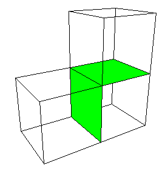
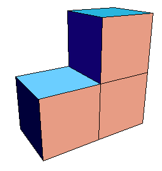

|  |  |
| The first level consists of 3 cubes, each of side length 1. |
| Each cube has 6 faces, each of area 1. |
| Interior faces do not contribute to the surface area, and two pairs of cubes share two faces, making them interior. |
| Among the 3*6 faces we have 4 interior faces. |
| So the total surface area is |
| A1 = 3*6*1 - 4*1 |